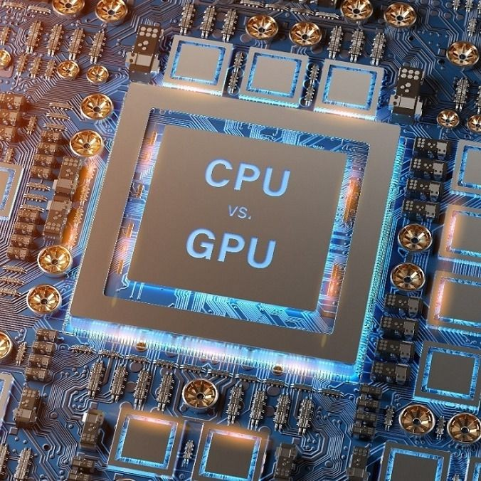
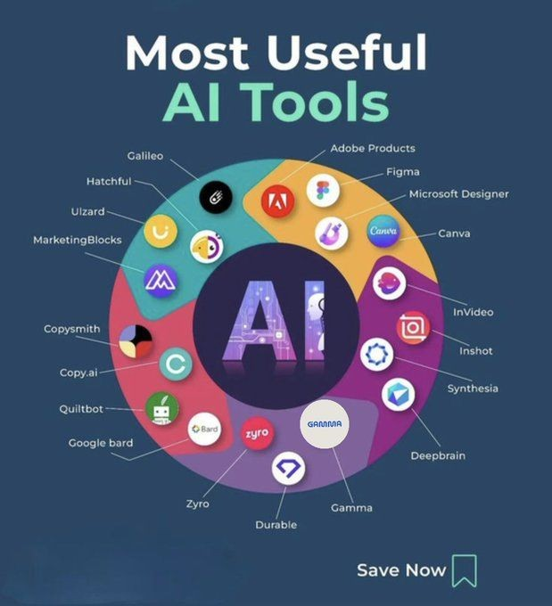

كيف بدأ الذكاء الاصطناعي
الشراره التى صنعت نظاماً قادر على تعليم و تطوير نفسه .
يمكننا تعريف الذكاء الاصطناعي بصورة مبسطة على أنه علم وهندسة صناعة آلات ذكية خاصة برامج الحاسوب الذكية. الهدف الأساسي منه هو جعل الآلات قادرة على التفكير والتعلم والتخطيط، تماماً كما يفعل الإنسان. نحن نرى نتائج هذا الذكاء كل يوم دون أن نشعر، فعندما تستخدم هاتفك الذكي وتطلب من المساعد الصوتي تنفيذ أمر ما، أو عندما يقترح عليك محرك البحث نتائج دقيقة بناءً على كلماتك، أو حتى عند لعبك لإحدى الألعاب الإلكترونية المعقدة، فأنت تتعامل بشكل مباشر مع أنظمة مدعومة بالذكاء الاصطناعي. تعمل هذه الأنظمة عن طريق تزويدها بكميات ضخمة من البيانات (المعلومات)، ثم تقوم خوارزمياتها بتحليل هذه البيانات واستخلاص الأنماط منها، ومن ثم تتخذ القرارات أو تقدم التنبؤات بدقة مذهلة.
الشراره التى صنعت نظاماً قادر على تعليم و تطوير نفسه .

كيف يعمل الذكاء الاصطناعي و ما علاقته بالGPU .

امثله على الادوات والبرامج التي تعتبر اشهر تطبيقات الذكاء الاصطناعي .
كيف يمكن للذكاء الاصطناعي انشاء الصور والفيديوهات .
اللهم علمنا ما ينفعنا وانفعنا بما علمتنا و زدنا به علما